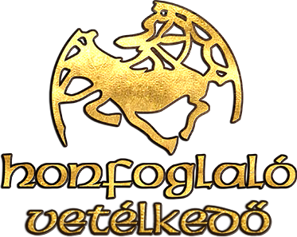
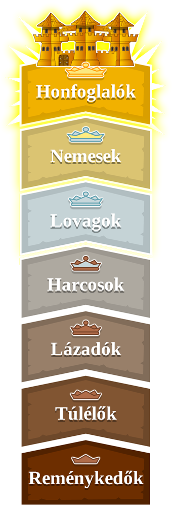

A Honfoglal� egy magyar fejleszt�s� online strat�giai kv�zj�t�k, amely 2002. okt�ber 20-�n deb�t�lt az interneten. K�lf�ld�n is megjelent: Dobyvatel ("H�d�t�") c�men cseh, illetve Triviador c�men spanyol, angol, bolg�r, orosz, arab, t�r�k, portug�l, rom�n, n�met, francia, lengyel, szlov�n �s szerb nyelven. K�s�bb (2003. febru�r 11-t�l) m�r t�rsasj�t�k form�j�ban is j�tszhat� volt, ugyanezen nyelveken. A j�t�kot a felhaszn�l�i is b�v�thetik azzal, hogy k�rd�seket k�ldenek be az oldalra, amik el�sz�r egy sz�r�n mennek �t, majd k�s�bb a j�t�kban is l�that�ak is lesznek.

A j�t�k c�lja, hogy k�rd�seket megv�laszolva min�l t�bb megy�t lehessen elfoglalni Magyarorsz�g t�rk�p�n. A j�t�k el�sz�r egy faluban kezd�dik, majd a J�t�kind�t�s gombra kattintva, azt�n pedig a neh�zs�gi fok kiv�laszt�sa ut�n ind�that� el. A nyertes az, aki a legt�bb pontot szerzi meg a j�tszma v�g�re. A k�rd�sekre tippelni lehet, illetve megadott v�laszokat lehet kiv�lasztani. Egyszerre 3 j�t�kos j�tszhat egym�s ellen (j�tszm�nk�nt). A 3 j�t�kos sz�ne: piros, z�ld, k�k (ut�bbi helyett kor�bban a s�rga volt haszn�latos) . A j�t�k b�zisfoglal�ssal kezd�dik, amikor a g�p elhelyezi mindh�rom j�t�kos v�r�t egy-egy megy�ben, ezut�n a j�t�kosok a t�bbi megye megszerz�s��rt k�zdenek k�rd�sek megv�laszol�s�val. Miut�n elfogyott a t�rk�pr�l az �sszes szabad megye, megkezd�dik a foglal�s, amikor a j�t�kosok egym�s megy�inek elfoglal�s�ra t�rekednek (harcolnak). A j�t�kban egy megye elfoglal�s��rt helyes v�laszt kell kiv�lasztani a n�gyb�l; amennyiben mindk�t j�t�kos helyesen v�laszol, egy tippel�s k�rd�sre k�zelebbi sz�mot kell megadni, mint az ellenf�l, vagy ha ugyanazt a sz�mot adja meg az ellenf�l is, akkor a gyorsabban v�laszol� j�t�kos� lesz a megye. Egy v�r elfoglal�s��rt h�romszor kell v�gigcsin�lni ezt. A j�t�kban t�bb j�t�km�d van (pl.: vill�mh�bor�, hossz� hadj�rat, junior j�t�k, mini bajnoks�g, j�t�k bar�tokkal stb.). A k�lf�ldi v�ltozatok j�t�kmenete nem t�r el nagyban, csak a Magyarorsz�g-t�rk�p helyett az adott orsz�g t�rk�p�n lehet j�tszani.